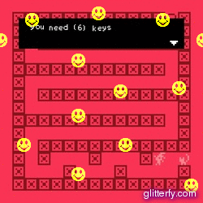

I have spent many, many hours on 'Escape To Cat City' and after being played through successfully a few times the game is now broken. Attempts have been made to restore it's functionality, but I have been unsuccessful. I leave you with the broken game, stills from each room, and a playable tester from in class.
The 'red room' sprite started taking an item instead of giving you a key, so I have immortalised the beginning of the end with this gif.

Escape To Cat City (no escape version)

bitsy tester